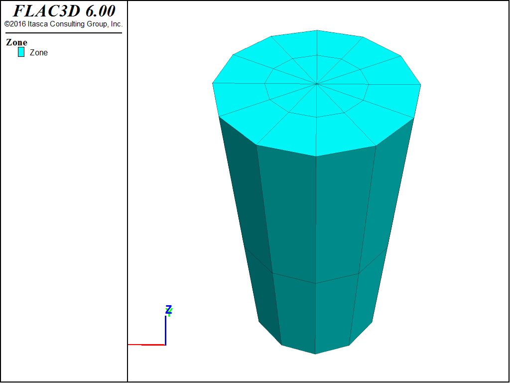
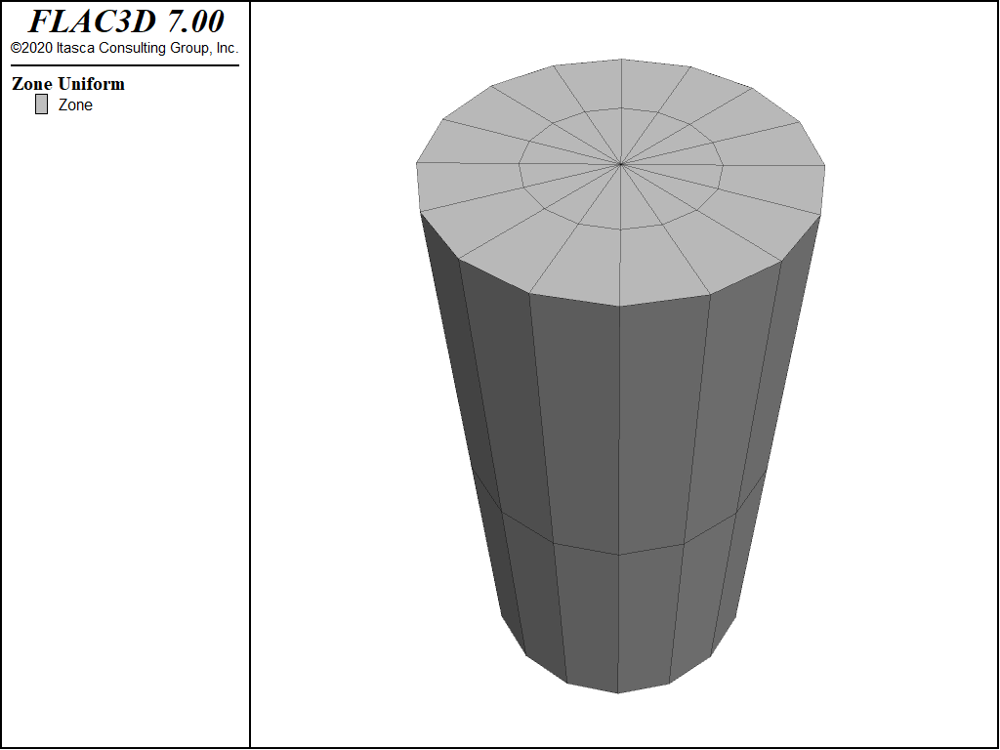
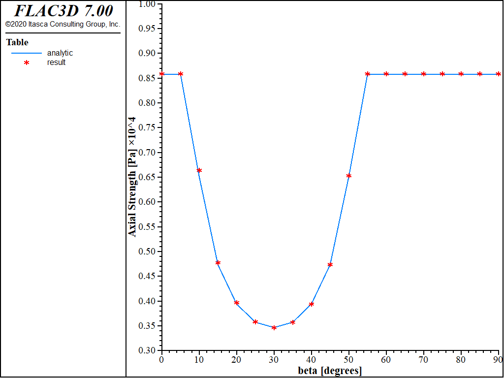

节理材料试样的单轴抗压强度
问题描述
注意
本示例的工程文件可在 FLAC3D 中查看/运行。[1] 所使用的主数据文件（main data files）在本示例末尾给出。其余数据文件可在该工程中找到。
采用遍布节理模型（ubiquitous-joint model）以数值方法评价圆柱形材料试样的单轴抗压强度。该模型考虑了 Mohr-Coulomb 材料中可引发剪切破坏的软弱方向（遍布节理）。试样的抗压强度是材料和节理性质以及压应力方向与其在软弱面平面上投影所成角度 \(\beta\) 的函数（见图 1（Figure 1））。
本示例中，试样取为半径为 \(a\)、高度为 \(b\) 的圆柱，且 \(b/a\) = 4。Mohr-Coulomb 材料具有以下性质：
| 剪切模量（\(G\)） | 70 MPa |
| 体积模量（\(K\)） | 100 MPa |
| 黏聚力（\(c\)） | 2 kPa |
| 摩擦角（\(\phi\)） | 40° |
| 剪胀角（\(\psi\)） | 0° |
| 抗拉强度极限（\(\sigma^t\)） | 2.4 kPa |
遍布节理性质包括：
| 黏聚力（\(c_j\)） | 2 kPa |
| 摩擦角（\(\phi_j\)） | 30° |
| 剪胀角（\(\psi_j\)） | 0° |
| 抗拉强度极限（\(\sigma_j^t\)） | 2.4 kPa |
解析预测
作为定义，令
其中 \(\beta\) 为软弱面角度，如图 1（Figure 1） 所示。在发生破坏之前，试样中的应力状态为均匀的。当 \(\kappa >\) 0 时，破坏将在软弱面上起始，
只要抗压强度值 \(-\sigma_1\)（拉为正）不违反 Mohr-Coulomb 破坏准则，
其中
若违反该准则，或若 \(\kappa \leq\) 0，则破坏将改在基质中发生，破坏面与试样对称轴成 \((\pi/4 - \phi/2)\) 角倾斜。详见 Jaeger 和 Cook（1979）。


图 1：问题几何。
FLAC3D Model
数值模拟选取半径为 1 m、高度为 4 m 的圆柱。选取一套参考坐标轴，其 \(x\) 轴和 \(z\) 轴位于圆柱底面内，\(y\) 轴沿圆柱轴线方向。该域离散为 48 个网格单元，按径向模式组织（见图 2（Figure 2））。在圆柱两端沿 \(y\) 方向施加均匀速度，以使试样受压。
从 0° 到 90° 每隔 5° 研究了 \(\beta\) 变化的影响。输入文件使用 FISH 函数（求解全部（solveAll））计算每个 \(\beta\) 值下的抗压强度。在每次针对不同 \(\beta\) 的计算之前执行 zone delete 命令。该命令删除所有网格单元，从而有效地重置模型。每次计算结束时，将由 FISH 函数 竖向应力（sigmav） 计算的最终竖向应力添加到表格中。这种方法使我们能够将整个参数分析保存于一个文件中。
在破坏机制起始之后，试样中的应力状态变得不均匀。为更好地控制系统的变形，监测试样顶部和底部的速度大小，并根据不平衡力值进行调整（伺服控制）。施加网格单元面条件（zone face apply） 命令中使用的 servo 关键字控制所施加速度的大小。循环计算持续进行，直至达到 4.5e-4 的累积位移（使用 FISH 函数 停止（halt）），这表明总应变足以使所有角度下均发生破坏。


图 2：FLAC3D 网格——单轴抗压强度试验。
结果与讨论
图 3（Figure 3） 将 FLAC3D 计算结果与解析抗压强度预测进行比较。吻合令人满意，所有 \(\beta\) 值下的相对误差均小于 2%。


图 3：抗压强度比较。
参考文献
Jaeger, J. C., and N. G. W. Cook. Fundamentals of Rock Mechanics, 3rd Ed. New York: Chapman and Hall (1979).
数据文件
UniaxialStrengthJointed.dat
;---------------------------------------------------------------------
; 圆柱试样的压缩试验，采用
; 遍布节理模型
;---------------------------------------------------------------------
model new
model large-strain off
fish automatic-create off
; 创建 Extruder 数据，以交互方式生成
; 并从 State Record 导出
program call 'geometry' ; 包含 'top' 和 'bottom' 组赋值
; 加载用于支持以下功能的 FISH 函数 -
; 强度计算与停止函数
program call 'fish-support'
; 主函数，其作用如下
fish define solveAll
global result = list
loop local beta (0,90,5) ; 以 5 度为间隔检查 0-90 度范围的角度
command
zone delete ; 删除所有现有网格单元
zone generate from-extruder ; 由 Extruder 生成新的网格单元
zone cmodel assign ubiquitous-joint ; 分配模型和属性
zone property bulk 1e8 shea 7e7 cohesion 2e3
zone property friction 40 dilation 0 tension 2400
zone property dip [beta] dip-direction 0 joint-cohesion 1e3
zone property joint-friction 30 joint-dilation 0 ...
joint-tension 2000
; 指定边界条件
zone face apply velocity-normal -5e-7 servo ...
ratio local minimum 1e-4 range group 'Top' or 'Bottom'
; 循环至达到目标应变
model solve fish-halt halt
; 将结果添加到表格
table 'result' add ([beta],[sigmav])
end_command
end_loop
end
; 运行全部 18 个工况
[solveAll]
; 保存最终状态和累积的表格
model save 'final'
fish-support.f3fis
; 计算最终强度的函数
fish define sigmav
local gps = gp.list( gp.isgroup(::gp.list,'bottom') )
return -list.sum(gp.force.unbal(::gps)->y)/3.06147
end
; 判断求解是否应停止的函数
fish define halt
global gpHalt = gp.near(0,0,0)
halt = gp.disp(gpHalt)->y > 4.5e-4
end
尾注
| [1] | 要在 FLAC3D 中查看该项目，请使用程序菜单。
⮡ FLAC |
| 这些内容对您有帮助吗？… | FLAC3D © 2019, Itasca | 原文更新于 2020 年 10 月 8 日 |
| 版权与免责声明 | ||